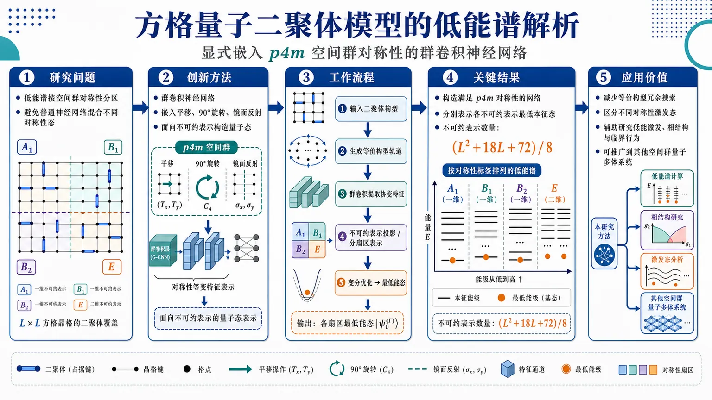
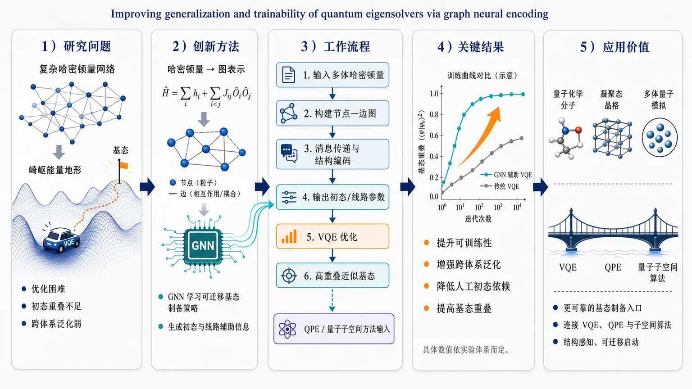
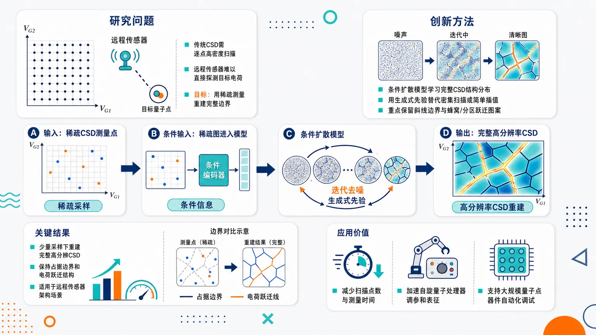
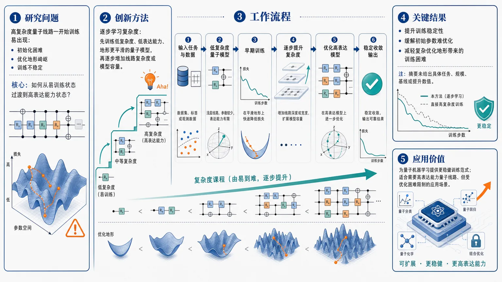
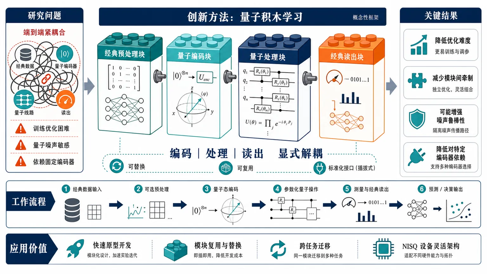
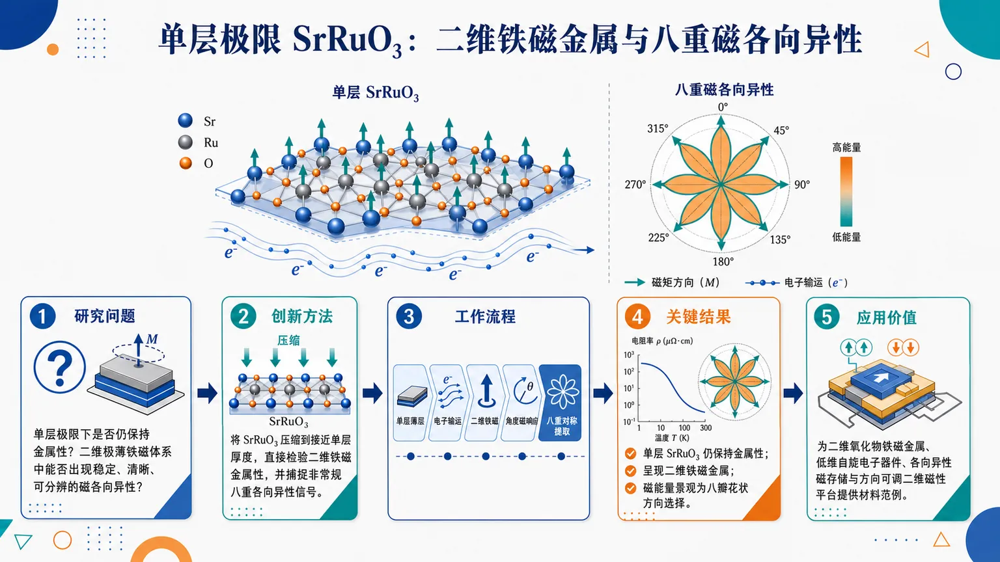
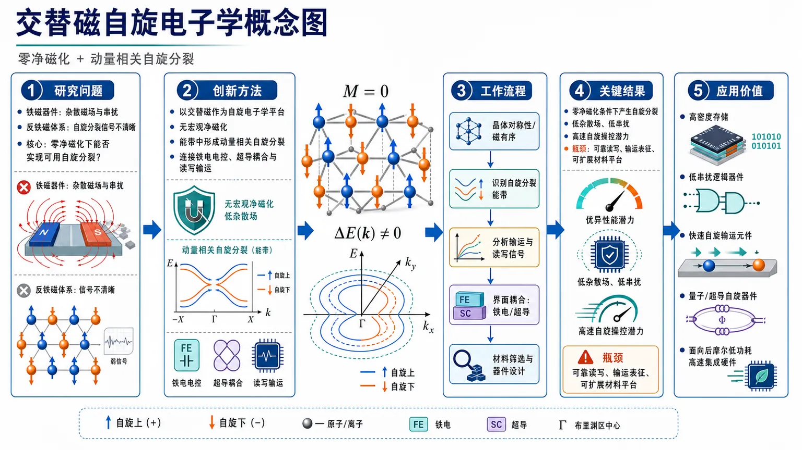
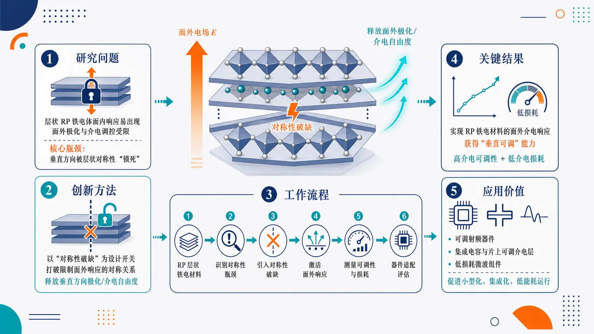

AI × Science 文献日报 2026/07/06
聚焦 AI × 物理 / 化学 / 材料交叉方向，自动过滤明显偏题的医学、教育与社会科学内容，并按主题重新排版，便于快速深读。
AI | 物理 | 化学 | 材料 | 交叉学科
原始候选 116 篇中，已剔除 0 篇明显偏离主线的内容，并从剩余 116 篇主线相关文献中精选 60 篇进入日报页，优先保留 AI × 物理 / 化学 / 材料交叉与关键计算方法工作。
核心关注（ML × ferro / 凝聚态）
8 篇本日进展集中在“把物理结构先验写进学习器”：图编码 VQE、p4m 群卷积波函数、复杂度渐进训练都在减少量子多体优化的无效自由度。扩散重构量子点稳定图与可泛化深度叠层成像，把凝聚态表征从密集扫描转向稀疏测量反演，和铁电畴、磁畴、缺陷相位恢复任务直接相邻。熔盐热导工作把结构相干模型接到机器学习势，方法论上可与 MACE、NEP、equivariant GNN 势函数及 DFT+U 数据闭环对接。交磁自旋电子学把零净磁化自旋劈裂推到器件层面，NbOI2、CrI3、CrSBr、BaTiO3 这类铁电/层状磁性/多铁体系可作为 ML 筛选与耦合建模的具体靶材。
-
01图神经编码改进量子本征求解器Improving generalization and trainability of quantum eigensolvers via graph neural encoding
📄 摘要：面向多体哈密顿量基态制备，采用图神经网络编码改造变分量子本征求解器。目标是提升初态与真实基态重叠、改善训练可达性和跨体系泛化能力，从而服务相位估计、量子子空间等需要高质量初态的算法。
💡 亮点：图神经编码把哈密顿量结构信息注入 VQE 参数化，针对基态重叠不足和训练困难。若能跨尺寸泛化，将直接影响量子模拟与组合优化中的初态制备。
📐 方法要点：用图神经编码生成 VQE 初态/ ansatz 参数，提高基态重叠。
🔗 相关工作关联：呼应神经量子态、GNN 哈密顿量编码、量子相位估计初态制备。
💡 对你方向的启示：多体铁电/磁性模型可先学图结构，再接 VQE 或子空间算法。
-
02扩散模型重构量子点电荷稳定图Reconstructing quantum dot charge stability diagrams with diffusion models
📄 摘要：针对自旋量子处理器中量子点电荷稳定图测量耗时的问题，使用条件扩散模型从稀疏采样重构完整高分辨率图。方法尤其面向远程传感器无法直接探测目标量子点电荷的架构，可减少器件表征所需测量量。
💡 亮点：条件扩散模型将稀疏量子点测量补全为完整电荷稳定图，直接压缩调参与标定时间。该生成式路线把 AI 加速带入可扩展自旋量子器件表征。
📐 方法要点：条件扩散模型由稀疏采样补全量子点电荷稳定图。
🔗 相关工作关联：呼应压缩感知、贝叶斯实验设计、显微图像超分辨与去噪扩散。
💡 对你方向的启示：铁电畴、磁畴和输运相图可用稀疏扫描加生成式重构降成本。
-
03走向可泛化的深度叠层成像网络Towards generalizable deep ptychography neural networks
📄 摘要：围绕深度学习叠层相干衍射成像，目标是构建跨样品、实验条件或仪器设置更可泛化的神经网络。该方向针对传统深度叠层成像依赖特定数据分布的问题，服务材料显微结构的快速相位恢复与高通量表征。
💡 亮点：深度叠层成像的核心瓶颈从重构速度转向跨实验泛化。可泛化网络将提升同步辐射与电子显微材料成像中的自动化相位恢复能力。
📐 方法要点：面向跨样品/仪器分布的深度叠层成像相位恢复网络。
🔗 相关工作关联：呼应 ptychography、物理约束反演、域泛化和自监督显微重建。
💡 对你方向的启示：做畴壁、缺陷、局域极化成像时应重视跨束斑和跨样品泛化。
-
04量子二聚体模型低能谱的群卷积网络Group convolutional neural network for the low-energy spectrum in the quantum dimer model
📄 摘要：在 L×L 方格量子二聚体模型中，构建具有 p4m 对称性的群卷积神经网络，分别表示晶格空间群的 (L²+18L+72)/8 个不可约表示中的低能本征态。方法把空间群对称性显式编码进神经网络波函数以求取低能谱。
💡 亮点：p4m 群卷积网络按不可约表示解析方格量子二聚体模型低能态。显式对称性编码提升了神经网络量子态处理强关联格点模型的效率与可解释性。
📐 方法要点：p4m 群卷积神经网络按空间群不可约表示求低能谱。
🔗 相关工作关联：呼应对称性等变神经量子态、晶格规范模型、量子二聚体液体。
💡 对你方向的启示：磁性/铁电晶格模型可显式分解对称扇区，减少谱计算混叠。
-
05量子机器学习模型的渐进复杂度学习Learning complexity gradually in quantum machine learning models
📄 摘要：针对量子机器学习训练中初始化和优化困难，提出逐步增加模型复杂度的训练策略。该思路让量子模型先学习简单结构，再扩展到更复杂函数类，旨在缓解训练停滞并改善近端量子模型的可训练性。
💡 亮点：渐进复杂度训练把课程学习思想引入量子机器学习，减少一开始优化高复杂量子线路的难度。它针对贫瘠高原和初始化敏感性，是近端量子模型训练的实用策略。
📐 方法要点：训练中逐步增加量子模型复杂度，先学低频简单结构。
🔗 相关工作关联：呼应课程学习、layerwise 训练、barren plateau 缓解、核复杂度控制。
💡 对你方向的启示：近端量子模拟凝聚态相图时，可用渐进 ansatz 降低优化停滞。
-
06量子积木学习：混合人工智能模块设计Quantum LEGO Learning: A Modular Design Principle for Hybrid Artificial Intelligence
📄 摘要：提出量子积木学习框架，将混合量子—经典学习拆成可复用经典块和量子块，并显式区分各模块角色。相较端到端强耦合训练，该模块化设计降低对特定编码器的依赖，减少噪声敏感性和优化难度。
💡 亮点：量子积木学习用模块化替代端到端混合量子训练，把预训练经典模块与量子模块解耦。该设计更适合噪声近端设备上的可迁移混合 AI 架构。
📐 方法要点：把混合量子—经典学习拆成可复用经典块与量子块。
🔗 相关工作关联：呼应模块化 QML、量子核、变分量子线路和经典特征提取器解耦。
💡 对你方向的启示：材料 QML 可固定稳健经典表征，仅替换小型量子模块做对照。
-
07结构相干模型结合机器学习势预测熔盐导热Integration of a Structural Coherence Model with a Semi-Universal Machine Learning Interatomic Potential to Predict Molten Salt Thermal Conductivity
📄 摘要：面向能源系统熔盐工质导热率数据缺口，将结构相干模型与半通用机器学习原子间势结合，用分子动力学预测热导。目标是在 Green–Kubo 或非平衡分子动力学高成本计算之外，降低熔盐热物性数据库扩展的不确定性与计算负担。
💡 亮点：半通用机器学习势与结构相干模型联合预测熔盐导热率，面向实验数据稀缺的核能和储热盐体系。该路线把原子级结构描述转化为可扩展热物性计算。
📐 方法要点：结构相干模型结合半通用 ML 势，用 MD 预测熔盐热导。
🔗 相关工作关联：呼应 Green–Kubo、非平衡 MD、MACE/NEP/DP 势和热输运数据库。
💡 对你方向的启示：热物性建模可把结构描述符与 ML 势联用，减少纯 MD 采样负担。
-
08交磁自旋电子学Altermagnetic spintronics
📄 摘要：综述交磁性这一非常规磁有序及其自旋电子学潜力。交磁体兼具零净磁化与动量依赖自旋劈裂，可能支持快速、低能耗自旋器件；内容覆盖其与铁电、超导体系的耦合以及可扩展器件设计前景。
💡 亮点：交磁体把反铁磁的零净磁矩与铁磁式自旋分裂结合，是自旋电子学的新平台。与铁电和超导的耦合使其可用于可控自旋输运和交织量子态设计。
📐 方法要点：综述交磁体的动量依赖自旋劈裂与零净磁化器件物理。
🔗 相关工作关联：呼应反铁磁自旋电子学、自旋轨道耦合、铁电调控和超导邻近效应。
💡 对你方向的启示：ML 筛选交磁材料需同时约束磁空间群、劈裂纹理和可开关耦合。
今日摘要
总览：今日文献横跨机器学习辅助量子多体与材料计算、交错磁性自旋电子学、铁电与弛豫铁电、拓扑超导和量子磁体：量子点电荷稳定图用扩散模型重建，量子二聚体模型低能谱用群卷积网络求解，熔盐热导和应变钽酸钾铁电序则结合机器学习原子间势与非谐晶格动力学。材料体系从铬硒、单层钌酸锶、铋铜硫酸盐自旋梯、铈银铅 frustrated 反铁磁体、钡铒铁氧、铋钽硫超导体，到二维五角双锥硼同素异形体、氮插层扭转双层石墨烯纳米带与拓扑绝缘体通量量子比特，现象覆盖八重磁各向异性、磁单极弛豫、魔鬼阶梯螺旋、平带超导超流权重、外尔半金属反常诱导体电磁混合模。
热点：机器学习与量子/材料计算融合 → 用图神经编码提升变分量子本征求解器可训练性，用扩散模型补全量子点电荷稳定图，用群卷积网络处理量子二聚体低能谱，并以机器学习原子间势预测熔盐热导和应变钽酸钾铁电序；典型工作为题目一、二、四、七、十八、二十四、五十五、五十九。交错磁体与非常规自旋电子学 → 围绕交错磁体的自旋劈裂、超快非对称自旋动力学磁化、金属性交错磁体中的超导与交织序、赝波超导/常规超导结中的约瑟夫森电流展开；典型工作为题目八、十七、二十一、三十三。拓扑、平带与非常规超导 → 平均晶体对称下拓扑超导分类、无能隙拓扑相纠缠谱、弱二阶拓扑绝缘体自旋分束、无序平带超导超流权重和拓扑绝缘体混合通量量子比特成为主线；典型工作为题目三十、三十四、三十七、四十、五十。受挫磁性与磁振子/声子探针 → 自旋冰卡斯特莱恩转变后的磁单极与弦动力学、锯齿铁磁晶格拓扑磁振子、声子增强的隐藏自旋向列性、镍钴钪锑氧魔鬼阶梯螺旋共同显示低能集体模与非平庸磁织构的可调控性；典型工作为题目十三、二十六、三十一、四十三。
今日文献
60 篇 · 9 含图深析-
01
📊 含图深析
📄 摘要：在 L×L 方格量子二聚体模型中，构建具有 p4m 对称性的群卷积神经网络，分别表示晶格空间群的 (L²+18L+72)/8 个不可约表示中的低能本征态。方法把空间群对称性显式编码进神经网络波函数以求取低能谱。
💡 亮点：p4m 群卷积网络按不可约表示解析方格量子二聚体模型低能态。显式对称性编码提升了神经网络量子态处理强关联格点模型的效率与可解释性。
📖 展开分析 + 配图

研究问题如何在方格量子二聚体模型中高效解析低能谱：把 L×L 方格晶格上的二聚体覆盖态按空间群对称性分区，分别寻找每个不可约表示扇区中的最低能本征态，避免普通神经网络混合不同对称性态而难以看清低能谱结构。创新方法提出显式嵌入 p4m 空间群对称性的群卷积神经网络，把平移、90°旋转、镜面反射等晶格操作直接做进卷积特征中；网络不是只学习一个整体波函数，而是面向空间群的各不可约表示构造量子态表示，Aha 点是用“对称性约束的神经网络”把低能谱拆成清晰的对称性扇区图谱。工作流程输入 L×L 方格晶格上的二聚体构型；施加 p4m 群操作生成等价构型轨道；群卷积层提取在平移、旋转、镜像下协变的特征；按空间群不可约表示进行投影或分扇区表示；通过变分优化得到各不可约表示中的最低能量与对应神经网络量子态；输出按对称性标签排列的低能谱结构。关键结果成功构造满足 p4m 对称性的群卷积神经网络，可分别表示空间群各不可约表示中的最低能本征态；摘要给出不可约表示数量为 (L²+18L+72)/8，显示低能谱可被系统拆分为多个对称性扇区；该方法明确利用平移、旋转和镜面对称来解析谱结构，但摘要未提供具体能量精度、系统尺寸或与传统方法的定量提升。应用价值为强关联量子晶格模型提供一种可视化清晰、对称性可控的神经网络求谱工具：可减少等价构型带来的冗余搜索，区分不同对称性激发态，辅助研究量子二聚体模型的低能激发、相结构和临界行为，也可推广到其他具有空间群对称性的量子多体系统。核心概览
论文面向方格量子二聚体模型低能谱，构造满足 p4m 空间对称性的群卷积神经网络，用于表示各不可约表示中的最低能本征态。
方法要点
- 研究对象是 (L× L) 方格晶格上的量子二聚体模型。
- 使用群卷积神经网络（Group CNN）作为量子态表示。
- 网络显式嵌入 p4m 对称性，包括平移、旋转和镜面对称。
- 按晶格空间群的不可约表示分别构造或表示最低能本征态。
- 摘要给出不可约表示数量为 ((L²⁺¹⁸L+72)/8)。
- 目标是利用对称性分解来解析低能谱结构。
关键结果
- 构造了满足 p4m 对称性的群卷积神经网络。
- 该网络可分别表示空间群各不可约表示中的最低能本征态。
- 论文明确将不可约表示数量表达为 ((L²⁺¹⁸L+72)/8)。
- 摘要称该方法显式利用平移、旋转和镜面对称来解析低能谱结构。
- 具体能量精度、系统尺寸、与其他方法的定量比较等，摘要未详述。
创新性判断
- 可能的新颖点在于：将 p4m 空间群对称性系统嵌入群卷积神经网络，用于量子二聚体模型低能谱的不可约表示分辨计算。
- 相比普通神经网络量子态方法，其潜在优势是显式利用空间群对称性，减少冗余并区分不同对称性扇区。
- 相比只处理基态或单一对称扇区的工作，该方法可能更强调“低能谱结构”及“各不可约表示最低能态”的统一表示。
- 但摘要未说明与既有变分蒙特卡洛、精确对角化或其他对称神经网络方法的直接比较，因此创新幅度和性能优势仍不确定。
-
02
📊 含图深析
📄 摘要：面向多体哈密顿量基态制备，采用图神经网络编码改造变分量子本征求解器。目标是提升初态与真实基态重叠、改善训练可达性和跨体系泛化能力，从而服务相位估计、量子子空间等需要高质量初态的算法。
💡 亮点：图神经编码把哈密顿量结构信息注入 VQE 参数化，针对基态重叠不足和训练困难。若能跨尺寸泛化，将直接影响量子模拟与组合优化中的初态制备。
📖 展开分析 + 配图

研究问题标准变分量子本征求解器在多体哈密顿量基态制备中容易出现优化困难、初态重叠不足和跨体系泛化弱的问题；画面可表现为“复杂哈密顿量网络”进入“崎岖能量地形”，传统 VQE 小车被困在局部谷底，难以到达基态目标。创新方法将多体哈密顿量显式转化为图结构，用图神经网络读取粒子、相互作用和耦合关系，生成或辅助生成 VQE 的初始量子态与变分线路信息；Aha 点是让模型从“哈密顿量图谱”中学习可迁移的基态制备策略，而不是只在单个体系上盲目调参。工作流程输入多体哈密顿量及其相互作用关系；构建节点—边图表示；图神经网络进行消息传递与结构编码；输出初态参数或量子线路辅助信息；送入 VQE 优化得到更高基态重叠的近似基态；该结果继续作为量子相位估计或量子子空间方法的优质输入。关键结果该框架旨在提升 VQE 的可训练性和对更大或不同体系的泛化能力，降低对人工高质量初态的依赖，并提高后续量子算法所需的基态重叠；具体实验体系、数值提升幅度和对比基线在所给内容中未详述。应用价值为量子化学、凝聚态物理和多体量子系统模拟提供更可靠的基态制备入口；可作为 VQE、量子相位估计和量子子空间算法之间的桥梁，使量子算法流水线从“难初始化、难训练”转向“结构感知、可迁移启动”。核心概览
论文面向量子多体哈密顿量基态制备，提出用图神经编码增强变分量子本征求解器（VQE），以提升初态与真实基态重叠，并改善可训练性与泛化能力。
方法要点
- 将图神经网络/图神经编码引入变分量子本征求解器框架，用于表征或辅助生成更合适的量子初态。
- 目标任务是多体哈密顿量的基态制备。
- 方法关注提高候选初态与真实基态之间的重叠度。
- 该策略旨在缓解标准变分量子线路在大希尔伯特空间中的训练困难与泛化瓶颈。
- 摘要暗示其可作为相位估计、量子子空间等算法的前置初态制备模块；具体电路结构、图构造方式、训练损失和优化流程摘要未详述。
关键结果
- 摘要明确声称：图神经编码可增强变分量子本征求解器在多体基态制备中的表现。
- 摘要明确指出：该方法旨在提高初态与真实基态的重叠。
- 摘要明确指出：该方法有助于缓解标准变分线路在大希尔伯特空间中的可训练性和泛化问题。
- 摘要明确指出：该改进可使依赖高重叠初态的算法，如相位估计和量子子空间方法，更加可用。
- 具体性能提升幅度、基准模型、系统规模、对比方法和实验/数值结果摘要未详述。
创新性判断
- 可能的新颖点在于将图神经网络的结构化表示能力用于量子多体哈密顿量基态初态制备，以增强 VQE 的泛化与可训练性；这一判断基于摘要，具体实现是否区别于已有神经量子态或机器学习辅助 VQE 工作，摘要未详述。
- 另一潜在创新是把“高重叠初态生成”作为核心目标，而不仅是直接最小化能量，从而服务于相位估计、量子子空间等后续量子算法；但其损失函数或训练目标是否确实如此设计，摘要未详述。
- 若图神经编码能利用哈密顿量的相互作用图或几何结构，则相对普通参数化量子线路可能具备更好的规模外泛化能力；不过摘要未说明图输入、编码形式或泛化实验细节，因此该点仍属合理推断。
-
03
📄 摘要：针对自旋量子处理器中量子点电荷稳定图测量耗时的问题，使用条件扩散模型从稀疏采样重构完整高分辨率图。方法尤其面向远程传感器无法直接探测目标量子点电荷的架构，可减少器件表征所需测量量。
💡 亮点：条件扩散模型将稀疏量子点测量补全为完整电荷稳定图，直接压缩调参与标定时间。该生成式路线把 AI 加速带入可扩展自旋量子器件表征。
📖 展开分析 + 配图

研究问题自旋量子处理器调参时，传统量子点电荷稳定图需要逐点高密度扫描，耗时巨大；尤其在远程传感器无法直接探测目标量子点电荷的架构中，如何仅用稀疏测量点重建出完整、高分辨率的电荷占据边界和电荷跃迁图案，是本文的核心问题。创新方法论文将条件扩散模型引入量子点电荷稳定图重建：把稀疏采样的测量网格作为条件输入，让扩散生成模型学习完整CSD的结构分布，从噪声中逐步生成清晰的高分辨电荷稳定图；Aha点在于用生成式扩散先验替代传统密集扫描或简单插值，重点保留斜线状占据边界、蜂窝状/分区状电荷跃迁结构。工作流程输入少量栅压扫描得到的稀疏CSD测量点；将稀疏图作为条件信息送入条件扩散模型；模型在迭代去噪过程中补全未测区域；逐步恢复电荷占据区域、边界线和跃迁轨迹；最终输出完整高分辨率量子点电荷稳定图，用于后续器件识别、调参与表征。关键结果条件扩散模型能够从稀疏量测中重建完整高分辨CSD，在少量采样条件下仍以保持占据边界和电荷跃迁结构为目标；该方法被证明适合远程传感器不能直接读取目标量子点电荷的器件场景。摘要未给出具体数值指标、误差下降幅度或基线对比。应用价值该研究可显著减少量子点阵列调参与表征所需的扫描点数和测量时间，帮助自旋量子处理器更快获得电荷状态地图；对大规模量子点器件、远程传感架构和自动化量子芯片调试具有实际价值，可把耗时的二维密集测量转化为少量采样后的智能重建。核心概览
本文属于量子点器件表征与机器学习交叉方向，提出用条件扩散模型从稀疏测量数据重构高分辨率电荷稳定图，以加速自旋量子处理器中量子点占据状态的表征。
方法要点
- 使用条件扩散模型进行图像/数据图重构。
- 输入为稀疏测量得到的电荷稳定图信息。
- 输出为高分辨率、完整的电荷稳定图。
- 目标是补偿远程传感器无法直接探测相关量子点电荷的问题。
- 方法面向减少全分辨率扫描所需时间；具体训练数据、网络结构和采样策略摘要未详述。
关键结果
- 该方法能够由稀疏测量生成定义量子点占据的高分辨率数据图。
- 论文声称其可用于量子点器件表征，尤其适合自旋量子处理器场景。
- 该方法针对两类实际瓶颈：远程传感器探测受限与全分辨率扫描耗时。
- 重构精度、速度提升幅度、与基线方法的定量比较摘要未详述。
创新性判断
- 可能的新颖点在于将条件扩散模型用于量子点电荷稳定图的稀疏到高分辨率重构。
- 相比传统密集扫描或常规插值/监督重建方法，扩散模型可能更擅长生成结构完整、物理图案清晰的稳定图；但摘要未给出对比细节，仍属合理推断。
- 面向远程传感器不可直接观测相关电荷这一实验限制进行建模，可能体现了应用场景上的针对性。
- 其真实创新程度还取决于是否已有生成模型或扩散模型用于类似量子器件表征任务；摘要未详述相关工作比较。
-
04
📄 摘要：针对量子机器学习训练中初始化和优化困难，提出逐步增加模型复杂度的训练策略。该思路让量子模型先学习简单结构，再扩展到更复杂函数类，旨在缓解训练停滞并改善近端量子模型的可训练性。
💡 亮点：渐进复杂度训练把课程学习思想引入量子机器学习，减少一开始优化高复杂量子线路的难度。它针对贫瘠高原和初始化敏感性，是近端量子模型训练的实用策略。
📖 展开分析 + 配图

研究问题量子机器学习模型一开始就使用高复杂度量子线路时，容易遭遇初始化困难、优化地形崎岖和训练不稳定，导致模型难以有效收敛；核心问题是如何让量子模型从“易训练状态”逐步过渡到“高表达能力状态”。创新方法提出“逐步学习复杂度”策略：不直接训练完整高复杂度量子模型，而是先从低复杂度、低表达能力、优化地形更平滑的量子模型起步，再在训练过程中逐步增加线路复杂度或模型容量；Aha 点是把训练路径本身设计成由浅入深的复杂度课程。工作流程输入量子机器学习任务与初始数据；构建低复杂度量子模型并进行早期训练；根据训练进程逐步提升模型表达能力或量子线路复杂度；继续优化更复杂的模型参数；最终得到更稳定收敛、表达能力更强的量子机器学习模型。关键结果论文声称逐步增加模型复杂度能够改善量子机器学习训练稳定性，缓解初始参数难以优化的问题，并减轻复杂优化地形带来的训练困难；但摘要未提供具体实验任务、模型规模、对比基线或性能提升数值。应用价值该研究为量子机器学习模型训练提供一种更稳健的训练范式，可用于设计更容易初始化、更易优化的量子模型训练流程，尤其适合未来需要训练高表达能力量子线路但受限于优化困难的应用场景。核心概览
这篇论文属于量子机器学习训练优化方向，提出一种“逐步学习复杂度”的策略：先训练低复杂度、较易优化的量子模型，再逐步提升模型表达能力，以缓解初始化困难和复杂优化地形带来的训练不稳定问题。
方法要点
- 采用从低复杂度量子模型开始训练的策略，以降低初始优化难度。
- 在训练过程中逐步增加模型复杂度或表达能力，而非一开始使用高复杂度模型。
- 目标是改善量子机器学习模型的训练稳定性和可优化性。
- 该方法针对量子机器学习中常见的初始化困难与优化地形复杂问题。
- 摘要未详述具体量子线路结构、复杂度增加方式、任务类型或优化算法。
关键结果
- 论文声称逐步增加模型复杂度有助于改善训练稳定性。
- 该策略旨在缓解量子机器学习模型训练中的初始化难题。
- 该策略也针对复杂优化地形导致的训练困难。
- 摘要未给出具体实验任务、量子线路规模、对比基线或性能数值，因此无法判断实际提升幅度。
创新性判断
- 可能的新颖点在于将“课程学习”或“逐步增加模型容量”的思想引入量子机器学习训练流程，用低复杂度量子模型作为起点，再扩展到更高表达能力模型。
- 相比直接训练固定复杂度量子模型，该方法可能更关注训练路径设计，而不仅是线路结构或优化器改进。
- 其创新性是否体现在具体复杂度调度规则、线路扩展机制或理论分析上，摘要未详述，无法确定。
-
05
📊 含图深析
📄 摘要：提出量子积木学习框架，将混合量子—经典学习拆成可复用经典块和量子块，并显式区分各模块角色。相较端到端强耦合训练，该模块化设计降低对特定编码器的依赖，减少噪声敏感性和优化难度。
💡 亮点：量子积木学习用模块化替代端到端混合量子训练，把预训练经典模块与量子模块解耦。该设计更适合噪声近端设备上的可迁移混合 AI 架构。
📖 展开分析 + 配图

研究问题混合量子–经典人工智能模型常被端到端紧耦合设计绑定：数据编码、量子线路处理、经典读出相互依赖，导致训练优化困难、对量子噪声敏感，并且过度依赖某一种量子编码器，限制模型复用、迁移和组合扩展。创新方法提出“量子积木学习”框架，把混合量子–经典学习系统拆成可替换、可复用的模块化积木：经典块负责数据预处理与读出，量子块负责量子态编码和量子处理；核心 Aha 点是将编码、量子处理、结果读出三种功能显式解耦，用积木拼装替代端到端黑箱耦合。工作流程输入经典数据后，先进入可选经典预处理模块；随后由数据编码模块把信息映射到量子态；量子处理模块执行参数化量子操作；测量结果进入经典读出模块；最终输出预测或决策。各模块像积木一样可单独训练、替换、复用和重新组合。关键结果论文主要给出概念性框架而非明确实验指标：量子积木学习被描述为可降低混合量子–经典模型的优化难度，减少训练过程中的模块间牵制；可能增强对量子噪声的鲁棒性；并降低系统对特定量子编码器或固定量子线路结构的依赖。应用价值该框架为量子机器学习系统提供更清晰的工程化设计原则：研究者可像搭建积木一样组合经典模块和量子模块，便于快速原型开发、模块复用、故障替换、跨任务迁移，并为未来噪声中等规模量子设备上的混合人工智能应用提供更灵活的架构基础。核心概览
本文提出“量子积木学习”框架，属于混合量子–经典人工智能/量子机器学习方向，主张将系统模块化为可复用经典块与量子块，以改进训练、噪声鲁棒性和编码依赖问题。
方法要点
- 将混合量子–经典学习系统拆分为可复用的经典模块和量子模块。
- 显式区分三个功能角色：数据编码、量子处理与结果读出。
- 采用模块化设计替代端到端紧耦合训练流程。
- 设计目标包括降低优化难度、减弱对噪声的敏感性，并降低对特定量子编码器的依赖。
- 摘要未详述具体量子线路结构、经典模型类型、训练算法或实验设置。
关键结果
- 摘要明确提出了“量子积木学习”这一模块化框架。
- 该框架被描述为有助于降低混合量子–经典模型的优化难度。
- 该框架被描述为可能减弱模型对量子噪声的敏感性。
- 该框架被描述为可减少系统对特定量子编码器的依赖。
- 摘要未详述是否有实验验证、基准任务、性能指标或定量提升结果。
创新性判断
- 可能的新颖点在于将混合量子–经典学习明确抽象为“可复用积木式模块”，而非传统端到端耦合架构。
- 其创新性还可能体现在对编码、量子处理、读出三类功能的显式解耦，使模型设计更具组合性和迁移性。
- 相比依赖特定量子编码器或特定量子线路的方案，该框架可能强调更通用的模块替换原则。
- 但摘要未提供与已有模块化量子机器学习、变分量子算法或混合模型设计工作的具体对比，因此创新幅度和实证优势仍无法确定。
-
06
📊 含图深析
📄 摘要：面向能源系统熔盐工质导热率数据缺口，将结构相干模型与半通用机器学习原子间势结合，用分子动力学预测热导。目标是在 Green–Kubo 或非平衡分子动力学高成本计算之外，降低熔盐热物性数据库扩展的不确定性与计算负担。
💡 亮点：半通用机器学习势与结构相干模型联合预测熔盐导热率，面向实验数据稀缺的核能和储热盐体系。该路线把原子级结构描述转化为可扩展热物性计算。
📖 展开分析 + 配图
研究问题能源系统中的熔盐热导率数据稀缺，而传统 Green–Kubo 或非平衡分子动力学计算像“逐个体系做昂贵模拟”一样成本高、难以覆盖多种熔盐组成；核心问题是如何用更低计算代价预测多组分熔盐的热导率，并保持可控的不确定度。创新方法将“结构相干模型”与“半通用机器学习原子间势”耦合：前者把熔盐微观结构的相干特征转化为热传导预测线索，后者像可跨体系复用的原子相互作用引擎，覆盖多种熔盐组成；Aha 点是用结构模型+机器学习势替代大量昂贵热流涨落或非平衡传热模拟。工作流程输入多种熔盐组成与原子结构信息；使用半通用机器学习原子间势快速描述离子间相互作用并生成结构特征；将局部/整体结构相干信息送入热导率结构模型；输出熔盐热导率估计值，并以不确定度控制辅助判断预测可靠性。关键结果论文提出了一条面向多种熔盐体系的低成本热导率预测路线，可用于弥补能源熔盐热物性数据库缺口；相比 Green–Kubo 和非平衡分子动力学，该路线被定位为计算量更低的替代方案；摘要未给出具体精度、加速倍数或定量对比数据。应用价值可为核能、聚光太阳能、储热与高温传热系统中的熔盐筛选提供快速热导率估计，减少逐体系实验或高成本分子动力学计算需求，加速熔盐热物性数据库建设和候选配方初筛。核心概览
该论文面向熔盐热导率预测，结合结构相干模型与半通用机器学习原子间势，以低成本替代昂贵分子动力学计算。
方法要点
- 将“结构相干模型”用于熔盐热导率预测框架中。
- 结合“半通用机器学习原子间势”描述多种熔盐体系的原子相互作用。
- 旨在替代高计算成本的 Green–Kubo 方法或非平衡分子动力学热导率计算。
- 面向多种熔盐组成进行热导率估计，而非仅针对单一体系。
- 强调在降低计算量的同时控制预测不确定度；具体不确定度量化方法摘要未详述。
关键结果
- 摘要明确指出该方法用于填补能源系统用熔盐热导率数据库缺口。
- 论文提出一种结构模型与机器学习势耦合的热导率预测路线。
- 该路线被定位为比 Green–Kubo 或非平衡分子动力学更低计算成本的替代方案。
- 目标是在多种熔盐组成上预测热导率并控制不确定度。
- 摘要未详述具体预测精度、计算加速倍数、验证体系数量或与实验/MD 的定量对比结果。
创新性判断
- 可能的新颖点在于将结构相干模型与半通用机器学习原子间势集成，用于熔盐热导率预测；这一组合相对常规 Green–Kubo 或非平衡分子动力学可能更高效。
- “半通用”机器学习势若能覆盖多种熔盐组成，可能提升跨体系预测能力，但其训练范围、泛化能力和验证细节摘要未详述。
- 将低成本预测与不确定度控制同时作为目标，可能是面向熔盐热物性数据库建设的实用创新；但具体不确定度控制策略摘要未说明。
- 总体看，创新更偏向方法集成与应用场景拓展，而非摘要中可确认的全新物理理论或全新机器学习架构。
-
07
📊 含图深析
📄 摘要：研究单层极限下 SrRuO3 的金属性和磁各向异性。二维铁磁金属通常难以同时保持强磁性与清晰各向异性，该工作显示单层 SrRuO3 可维持金属态并出现八重磁各向异性，指向可调二维氧化物自旋电子平台。
💡 亮点：单层 SrRuO3 同时保持金属性并呈现八重磁各向异性，突破二维铁磁金属各向异性难稳定的限制。该氧化物界面体系适合研究低维自旋轨道耦合和可写磁态。
📖 展开分析 + 配图

研究问题单层极限下的 SrRuO₃ 是否还能像体材料一样保持金属性，并在二维极薄铁磁体系中呈现稳定、清晰且可分辨的磁各向异性结构。创新方法将 SrRuO₃ 压缩到接近单层厚度这一极限尺度，直接检验其二维铁磁金属性，并重点捕捉非常规的“八重磁各向异性”信号；Aha 点在于：极薄到单层后不仅没有失去金属性，还出现比常见单轴或四重对称更复杂的八瓣式磁各向异性图案。工作流程以单层极限 SrRuO₃ 薄层为研究对象 → 考察极薄层中的电子输运行为以判断是否保持金属态 → 分析二维铁磁状态 → 测量或解析不同磁场方向下的磁响应 → 提取八重对称的磁各向异性特征 → 建立“单层金属态 + 二维铁磁性 + 八重各向异性”的材料图像。关键结果SrRuO₃ 即使在单层极限下仍保持金属性，表现为二维铁磁金属；体系中揭示出清晰的八重磁各向异性，说明其磁能量景观呈现八瓣花状方向选择，而非简单的单轴或四重对称。应用价值为设计二维氧化物铁磁金属提供了重要材料范例，可用于探索低维自旋电子器件、各向异性磁存储、可方向调控的二维磁性金属平台，并推动对极限厚度下钙钛矿氧化物电子态与磁态耦合机制的理解。核心概览
该论文研究单层极限 SrRuO₃ 的二维铁磁金属性与磁各向异性，属于低维钙钛矿氧化物、二维铁磁金属与自旋电子学材料方向。
方法要点
- 研究对象为单层极限下的钙钛矿氧化物 SrRuO₃。
- 关注其在极薄层条件下是否仍能保持金属性。
- 重点考察二维铁磁状态中的磁各向异性特征。
- 摘要未详述具体制备方法、表征手段或理论计算方法。
关键结果
- 单层极限 SrRuO₃ 在极薄层中仍保持金属性。
- 该体系表现出二维铁磁金属特征。
- 观察到或揭示了八重磁各向异性。
- 结果回应了二维铁磁金属中“强磁性”和“清晰磁各向异性”难以同时实现的问题。
创新性判断
- 可能的新颖点在于证明 SrRuO₃ 即使接近单层极限仍能保持金属性，这对二维氧化物金属较为重要。
- 八重磁各向异性的发现可能是该工作的重要特色，说明其磁各向异性结构比常见的单轴或四重各向异性更复杂。
- 该工作可能为二维铁磁金属中兼具稳定铁磁性、金属性和明确各向异性的材料设计提供案例。
- 但摘要未详述对比对象、实验精度、温度范围和机理分析，因此其相对已有工作的创新程度仍需结合全文判断。
-
08
📄 摘要：综述交磁性这一非常规磁有序及其自旋电子学潜力。交磁体兼具零净磁化与动量依赖自旋劈裂，可能支持快速、低能耗自旋器件；内容覆盖其与铁电、超导体系的耦合以及可扩展器件设计前景。
💡 亮点：交磁体把反铁磁的零净磁矩与铁磁式自旋分裂结合，是自旋电子学的新平台。与铁电和超导的耦合使其可用于可控自旋输运和交织量子态设计。
📖 展开分析 + 配图

研究问题传统铁磁自旋电子器件有杂散磁场和器件串扰，反铁磁体系又常缺乏清晰可用的自旋分裂信号；核心问题是：能否利用“零净磁化但仍有自旋分裂”的交替磁材料，实现快速、低串扰、可扩展的自旋电子器件。创新方法以交替磁作为新的自旋电子学平台：它不像铁磁体那样产生宏观净磁化，却能在能带中形成动量相关的自旋分裂。Aha 点是把“无外部磁泄漏的安静磁体”和“可操控自旋分裂的活跃能带”结合起来，并进一步连接铁电电控、超导耦合、读写机制和输运器件设计。工作流程从交替磁材料的晶体对称性与磁有序出发，识别零净磁化下的自旋分裂能带；再分析其自旋输运、读写信号和与铁电/超导体系的界面耦合；最后指向材料筛选、器件结构设计和可扩展自旋电子芯片应用。关键结果综述指出交替磁可在零净磁化条件下产生自旋分裂，使器件同时具备低杂散场、低串扰和高速自旋操控潜力；交替磁与铁电、超导的耦合被归纳为重要方向；器件实现的关键瓶颈集中在可靠读写、输运表征和可扩展材料平台。应用价值交替磁自旋电子学有望用于高密度存储、低串扰逻辑器件、快速自旋输运元件和新型量子/超导自旋器件，为后摩尔时代低功耗、高速度、可集成的信息处理硬件提供新的材料与器件路线。核心概览
这是一篇自旋电子学方向综述，聚焦“交替磁”这种非常规磁有序，讨论其零净磁化下的自旋分裂特性，以及在低串扰、快速器件中的潜在应用路径。
方法要点
- 综述交替磁的基本物理特征，尤其是零净磁化下仍可产生自旋分裂。
- 讨论交替磁与铁电体系的耦合，可能涉及电控磁性或磁电功能；具体机制摘要未详述。
- 讨论交替磁与超导体系的耦合，可能面向新型量子/自旋输运效应；具体模型或实验摘要未详述。
- 总结面向可扩展自旋电子器件的读写方案、输运特性和材料实现路径。
- 文章性质为综述，摘要未显示其包含新的实验数据或原创理论计算。
关键结果
- 交替磁可在零净磁化条件下产生自旋分裂。
- 这种特性使其有望支持快速、低串扰的自旋电子器件。
- 交替磁与铁电、超导体系的耦合被认为是重要研究方向。
- 器件层面的关键问题包括读写机制、输运行为和可扩展材料实现。
- 具体材料体系、性能指标、器件参数或实验验证结果，摘要未详述。
创新性判断
- 相比传统铁磁自旋电子学，交替磁的潜在新颖性在于兼具“零净磁化”和“自旋分裂”，可能降低杂散场和串扰，同时保留自旋操控能力。
- 相比反铁磁自旋电子学，交替磁可能提供更直接或更强的动量相关自旋分裂优势；但摘要未详述其与具体反铁磁体系的比较。
- 将交替磁与铁电、超导耦合并联系到可扩展器件读写和输运路径，可能是该综述的综合性贡献。
- 由于仅有摘要，无法判断文章是否提出了新的理论框架、材料候选或器件结构；其创新性更可能体现在领域梳理与应用前景整合上。
-
09
📄 摘要：通过打破 Ruddlesden–Popper 铁电材料的对称性，实现面外介电响应。该材料表现出高可调性和低损耗，针对传统层状 Ruddlesden–Popper 体系面外极化受限的问题，扩展了可集成铁电介电器件的材料选择。
💡 亮点：对称性破缺使 Ruddlesden–Popper 铁电体获得低损耗、高可调面外介电行为。该结果直接关联三维可集成铁电电容、调谐器和射频器件。
📖 展开分析 + 配图

研究问题层状 Ruddlesden–Popper（RP）铁电体像一叠天然“晶体薄片”，面内响应容易出现，但面外极化与面外介电调控长期受限；核心问题是如何突破层状对称性带来的“垂直方向锁死”，让电场沿薄膜厚度方向也能产生强、可调且低损耗的介电响应。创新方法论文的 Aha 点是用“对称性破缺”作为材料设计开关：有意打破 RP 层状结构中限制面外响应的对称关系，把原本难以在垂直方向活动的极化/介电自由度释放出来，从而在面外方向同时获得高介电可调性和低介电损耗。工作流程从层状 RP 铁电材料出发 → 识别其面外响应受限的对称性瓶颈 → 通过结构/材料设计引入对称性破缺 → 激活或增强垂直于层面的介电响应 → 测量面外介电可调性与损耗 → 评估其在射频可调器件和集成电介质器件中的适配性。关键结果研究实现了 RP 铁电材料中的面外介电响应，使原本偏向面内功能的层状铁电体获得“垂直可调”能力；该响应表现出高可调性与低损耗的组合，说明对称性破缺能有效提升 RP 体系作为可调介电材料的性能潜力。应用价值该研究为可调射频器件、集成电容、片上可调介电层和低损耗微波组件提供了新的材料设计路径：利用层状 RP 铁电体的结构可设计性，在薄膜厚度方向实现可控介电调谐，利于器件小型化、集成化和低能耗运行。核心概览
该论文属于铁电/可调介电材料方向，报道通过打破 Ruddlesden–Popper 层状铁电体对称性，实现面外介电响应，并面向射频与集成器件应用。
方法要点
- 通过“破坏对称性”的材料设计思路，调控 Ruddlesden–Popper（RP）铁电材料的面外介电性质。
- 目标是突破传统层状 RP 体系中面外极化或面外介电响应受限的问题。
- 设计导向强调获得高介电可调性与低介电损耗的组合。
- 应用场景指向可调射频器件和集成电介质器件；具体制备方法、结构表征和测试条件摘要未详述。
关键结果
- 实现了 RP 铁电材料中的面外介电响应。
- 所得面外响应兼具高可调性和低损耗。
- 该设计被认为有助于提升层状 RP 铁电材料在可调射频和集成介电器件中的适配性。
- 具体性能数值、对照样品、频率范围和损耗指标摘要未详述。
创新性判断
- 可能的新颖点在于：针对 RP 层状铁电体通常面外极化/响应受限的问题，采用对称性破缺策略来激活或增强面外介电响应。
- 另一潜在创新是同时实现“高可调性”和“低损耗”，这对射频可调介电材料通常较关键。
- 其创新程度相对已有 RP 铁电材料研究的具体位置，摘要信息不足，无法判断是否为首次实现、性能是否创纪录或机制是否已被系统证明。
-
10
📄 摘要：针对近铁电体 KTaO3，结合非谐方法和机器学习力场研究应变诱导铁电序。该体系本征接近铁电不稳定性，计算聚焦应变、晶格非谐性和温度效应如何触发可翻转自发极化。
💡 亮点：非谐晶格动力学与机器学习力场共同解析应变 KTaO3 的铁电化。该组合能处理近铁电体中强非谐涨落，对氧化物应变工程尤其关键。
-
11
📄 摘要：提出 FIRE-Swap 框架，用第一性原理训练的机器学习原子间势采样复杂钙钛矿的代表性组分结构。方法结合蒙特卡罗化学交换与几何弛豫，同时处理化学和结构自由度，用于解析弛豫铁电体的内禀局域结构。
💡 亮点：FIRE-Swap 把化学交换采样与机器学习势弛豫结合，直达复杂钙钛矿弛豫铁电体的代表性结构。它补上了组分无序和局域畸变协同采样的关键环节。
-
12
📄 摘要：研究各向同性反铁磁 Heisenberg 微扰对环面码的影响，重点考察拓扑有序破坏时的量子相变及后续相的性质。利用神经网络量子态在宽参数范围求解基态，解析拓扑相与常规磁相之间的竞争。
💡 亮点：神经网络量子态用于追踪反铁磁 Heisenberg 微扰下环面码的基态相变。该问题连接拓扑量子纠错模型与真实自旋交换作用下的稳定性边界。
-
13
📄 摘要：面向半导体电子-声子耦合与热电输运，比较广义形变势模型和机器学习近似，以降低密度泛函微扰理论及插值方法的计算成本。目标是在保留从头算输运预测能力的同时，快速估计电子-声子散射和热电输运系数。
💡 亮点：广义形变势与机器学习被用于替代昂贵的电子-声子耦合全计算。该路线有望加速半导体热电材料筛选，并保持对散射机制的物理可解释性。
-
14
📄 摘要：在一维扩展 Su–Schrieffer–Heeger 链中，用无序自由体系的约化关联矩阵训练卷积神经网络，并预测含非对角和对角无序时的绕数相图。模型识别拓扑绝缘体与 Anderson 绝缘体边界，显示关联矩阵特征可迁移到无序体系。
💡 亮点：只用无序自由 SSH 数据训练的 CNN 可判别含无序体系的绕数相图。该结果说明约化关联矩阵可作为拓扑相与 Anderson 局域化的稳健机器学习表征。
-
15
📄 摘要：提出无监督机器学习框架，用自编码器从 L 位点费米-哈伯德模型的约化密度矩阵数据中学习量子多体基态的最优压缩表示。潜空间维度可自动识别基态流形的最小参数化，并捕捉与相互作用、填充和关联相关的低维结构。
💡 亮点：自编码器从约化密度矩阵中发现费米-哈伯德基态的最小潜在表征。该方法把量子态压缩变成数据驱动的几何学习问题，可服务于多体相图降维与可解释机器学习。
-
16
📄 摘要：围绕深度学习叠层相干衍射成像，目标是构建跨样品、实验条件或仪器设置更可泛化的神经网络。该方向针对传统深度叠层成像依赖特定数据分布的问题，服务材料显微结构的快速相位恢复与高通量表征。
💡 亮点：深度叠层成像的核心瓶颈从重构速度转向跨实验泛化。可泛化网络将提升同步辐射与电子显微材料成像中的自动化相位恢复能力。
-
17
📄 摘要：利用加拿大和美国近地面气象站网络，结合较小规模高空观测网络，推导理论风切变指数，并把幂律风廓线嵌入机器学习模型。目标是在大空间范围订正再分析产品的轮毂高度风速与风切变偏差，弥补常规观测高度与风能评估高度之间的差距。
💡 亮点：近地面站网与风切变幂律被联合嵌入机器学习模型，用于订正再分析轮毂高度风速。该物理约束数据驱动框架面向大区域风资源评估中的高度外推偏差。
-
18
📄 摘要：将自旋轨道耦合纳入平面波基相位约束辅助场量子蒙特卡洛。实现依赖由全相对论原子全电子计算生成的优化多投影范数守恒赝势，使 pw-AFQMC 可处理含 SOC 材料的相关电子问题并保持从头算精度路线。
💡 亮点：pw-AFQMC 首次系统并入全相对论赝势形式的 SOC。该扩展面向重元素和拓扑材料中的强关联能量计算，减少 DFT 泛函依赖。
-
19
📄 摘要：用蒙特卡洛模拟和动态标度理论研究经典自旋冰在磁场淬火到 Kasteleyn 转变附近后的弛豫。分析磁化强度与磁单极子密度的时间演化，刻画单极子和弦激发的临界慢化，检验该转变附近非平衡动力学的标度形式。
💡 亮点：磁场淬火后的自旋冰在 Kasteleyn 临界区表现出单极子密度和磁化弛豫的动态标度。该工作把磁单极子与弦的非平衡动力学纳入临界现象框架。
-
20
📄 摘要：基于正交硼 o-B14 的五角双锥结构单元，理论研究二维 penta-bipyramid 硼同素异形体。多中心 π 键和多样键长导致非常规电子结构，计算显示其可兼具超导、磁性以及方向依赖的等离激元模式，体现硼低维网络的强各向异性功能。
💡 亮点：二维五角双锥硼被预测同时承载超导、磁性和定向等离激元。七中心二电子 π 键主导的硼网络为低维多功能量子材料设计提供了结构原型。
-
21
📄 摘要：研究 Cr₂₀Mn₂₀(Fe₂₀−ₓRuₓ)Co₂₀Ni₂₀（0≤x≤20）高熵合金。尽管 Ru 替代 Fe 后价电子浓度保持 8 e/a，结构仍发生从 Cantor 合金常见相向 hcp 稳定化的转变；结合磁性与结构测量，说明 VEC 之外的元素尺寸和化学效应决定相稳定性。
💡 亮点：Ru 替代在 VEC 不变的 CrMnFeCoNi 基高熵合金中稳定 hcp 结构。结果表明高熵合金相选择不能只用价电子浓度判据，需要纳入 Ru 的结构与磁性效应。
-
22
📄 摘要：围绕反铁磁 Cr2Se3，报告样品合成、物性测量和能带结构分析。动机来自反铁磁拓扑材料中自旋与拓扑序的耦合，其零净磁化和潜在拓扑电子态适合低功耗自旋电子和量子器件候选筛选。
💡 亮点：Cr2Se3 被系统考察为反铁磁拓扑候选材料，覆盖合成、磁性和能带。该体系有助于评估铬硒化物中自旋序与拓扑电子结构的耦合。
-
23
📄 摘要：针对由锯齿链构成的磁性化合物，分析铁磁锯齿晶格中的磁振子能带拓扑。模型纳入一般晶格几何、空间各向异性 Heisenberg 交换及相关相互作用，讨论几何与交换各向异性如何诱导拓扑磁振子特征。
💡 亮点：铁磁锯齿晶格的磁振子拓扑由链状几何和各向异性交换共同塑造。该模型为真实锯齿链磁体中的拓扑磁振子和热霍尔响应筛选建立基准。
-
24
📄 摘要：研究具有界面 Dzyaloshinskii-Moriya 相互作用的超薄铁磁纳米管。曲率与界面手性相互作用共同打破磁化反转对称性，并产生量子化螺旋磁模式；该三维曲面纳米磁体系展示几何诱导的非互易磁动力学。
💡 亮点：超薄磁纳米管中曲率与界面 Dzyaloshinskii-Moriya 相互作用导致非对称反转和量子化螺旋模式。该结果为三维曲面自旋波器件提供可调手性机制。
-
25
📄 摘要：针对无偶极磁序但具有自旋四极矩长程序的自旋向列相，提出利用声子耦合增强和探测隐藏序的方法。以自旋 1 三角晶格量子磁体为例，分析自旋-声子耦合对向列序和动力学响应的影响，给出可通过晶格振动通道识别向列性的方案。
💡 亮点：自旋-声子耦合可放大自旋向列序的实验可见性，并揭示其动力学响应。该方案把难以被常规磁探针观测的四极矩序转化为声子相关信号。
-
26
📄 摘要：研究由精确费米子宇称和平均晶体对称保护的拓扑超导相，属于平均晶体对称保护拓扑态。通过推广实空间构造建立分类框架，覆盖多种内禀平均晶体拓扑超导实例，并区分无序平均对称下仍可保护的边界与缺陷模式。
💡 亮点：推广实空间构造给出了平均晶体对称拓扑超导的分类。该框架说明即使晶体对称只在统计平均意义成立，费米子宇称仍可保护新的超导拓扑相。
-
27
📄 摘要：生长 P6₃/mcm 空间群的 Bi₂Ta₃S₆ 单晶，其结构由 Ta-S 层与 Bi 层交替组成，Bi 原子连接邻近 S 原子。通过输运、磁化等物性测量确认其为 II 型超导体，并在静水压力下考察超导性质的演化，建立该层状硫化物的单晶基准样品。
💡 亮点：Bi₂Ta₃S₆ 单晶被制备并确认为 II 型超导体，压力实验追踪其超导响应。该层状 Ta-S/Bi 结构为研究硫化物超导与压力调控提供实验平台。
-
28
📄 摘要：理论研究 p 波非常规磁体与自旋单态 s 波超导体混合体系的表面态密度和约瑟夫森电流。由于 p 波非常规磁体的非共线自旋结构，s 波配对势在近邻效应下表现出 p 波超导特征，并改变隧穿谱与电流-相位关系。
💡 亮点：p 波非常规磁体的非共线自旋纹理可把邻近 s 波配对转化为 p 波超导成分。该机制为无自旋三重态本征超导材料的 p 波约瑟夫森器件提供路径。
-
29
📄 摘要：探讨分子轨道晶体中电荷歧化导致极性反铁磁金属的机制。极性、金属性和反铁磁性通常相互竞争；该机制利用分子轨道自由度与电荷不均匀性，使无净磁化的自旋极化金属态与极性结构共存。
💡 亮点：电荷歧化被提出为分子轨道晶体实现极性反铁磁金属的路径。它把极性结构、金属输运和反铁磁自旋极化统一到同一电子机制中。
-
30
📄 摘要：研究对称性指标显示平庸的高阶拓扑相，指出除 Z₄=2 轴子绝缘体的手性铰链态外，还存在隐藏的弱二阶拓扑绝缘体。该相可在特定边界配置下产生可重构自旋分裂通道，说明单靠对称性指标可能漏判高阶拓扑边界模。
💡 亮点：弱二阶拓扑绝缘体可隐藏在平庸对称性指标中，却支持可重构自旋分裂边界通道。该结果提醒高阶拓扑材料筛选需超越常规指标判据。
-
31
📄 摘要：在浅 GaAs/Al₀.₀₃Ga₀.₉₇As 高质量量子阱中，重空穴激子共振激发下观测到轻空穴激子的声子辅助反斯托克斯光致发光。结果显示单一纳米结构内存在子带间激子转移，并指向半导体光学冷却相关的能量上转换过程。
💡 亮点：GaAs/Al₀.₀₃Ga₀.₉₇As 浅量子阱中观测到轻空穴激子的声子辅助反斯托克斯发光。该现象直接揭示子带间激子转移和声子参与的上转换冷却通道。
-
32
📄 摘要：该文为《面外磁场下二维 Rydberg 激子》的勘误，修正原 Phys. Rev. B 113, 085415（2026）论文中的相关内容。摘要未给出具体修正项，主题仍涉及二维 Rydberg 激子在垂直磁场中的理论描述。
💡 亮点：该条目修正二维 Rydberg 激子在面外磁场研究中的原文错误。具体物理结论需以勘误后的公式或文本为准。
-
33
📄 摘要：研究基于中心自旋模型的量子电池优化，分析有效充电动力学中的两个互补结构指标。优化过程中出现涌现镜面对称，揭示耦合结构、能量转移路径与充电性能之间的对应关系。
💡 亮点：中心自旋量子电池在最优充电结构中出现涌现镜面对称。该对称性把网络耦合形状与能量存储效率相连，可指导多自旋量子电池控制。
-
34
📄 摘要：预测外尔半金属中一种此前未识别的混合体电磁集体模。该模式源于手征异常及其相关手征磁响应方向与传播方向之间的耦合，体现拓扑半金属电荷泵浦、磁场和电磁波传播的联合效应，可作为外尔物质的集体响应指纹。
💡 亮点：手征异常在外尔半金属中诱导新的混合体电磁模式，取决于手征磁响应与传播方向的取向。该模式为探测拓扑异常的体相电磁谱提供了具体预言。
-
35
📄 摘要：在均匀配对假设下解析研究无序对平带超导超流权重的影响。结果表明无序的直接贡献通常很小；最低阶修正由杂质波函数局域化泛函的带内与带间部分之差决定，而该差值通常相互抵消，为无序平带超导刚度提供简洁判据。
💡 亮点：无序对平带超导超流权重的最低阶直接影响通常因带内/带间局域化泛函抵消而消失。该解析结果澄清了几何超流刚度与 Anderson 局域化之间的竞争关系。
-
36
📄 摘要：以一维和二维无能隙拓扑超导自由费米子模型为例，展示子系统关联矩阵谱，即自由费米子情形下的纠缠谱，可用于表征无能隙拓扑。该方法在体能隙关闭时仍能揭示拓扑边界信息和相变结构，补充传统能带不变量诊断。
💡 亮点：纠缠谱可在无能隙拓扑超导中保留并揭示拓扑信息。该诊断工具适合处理常规体能隙不变量失效的临界或节点拓扑相。
-
37
📄 摘要：采用第一性原理结合输运计算，研究氮插层反铁磁扭转双层石墨烯纳米带的电子、磁性和热电性质。层间扭转与氮插层共同调控能带、自旋分布和输运通道，展示石墨烯纳米带在自旋电子和热电响应中的可调性。
💡 亮点：氮插层与层间扭转为反铁磁双层石墨烯纳米带引入可调电子、磁性和热电响应。第一性原理输运结果指向纳米碳自旋热电器件设计。
-
38
📄 摘要：将分数量子霍尔态的流体描述推广到相互作用双组分玻色系统，用以刻画玻色对称保护整数量子霍尔效应。分析其流体动力学边缘模和脆弱表面态，阐明对称性保护下边界响应如何依赖相互作用与表面实现。
💡 亮点：双组分相互作用玻色子的整数量子霍尔相可用流体理论描述其边缘动力学。脆弱表面态显示玻色对称保护拓扑相的边界稳定性强烈依赖对称实现。
-
39
📄 摘要：研究簇 Ising 量子电池的充电功率标度，讨论其在特定条件下可模拟超广延充电功率。该模型用于区分真正由多体量子优势导致的功率增强与有限尺寸或动力学结构造成的表观超线性标度。
💡 亮点：簇 Ising 量子电池可产生类似超广延的充电功率标度。结果提醒量子电池功率优势需排除模型结构与有限尺寸造成的“模拟”增强。
-
40
📄 摘要：腔-磁振子极化激元体系中，两个线偏振独立微波场叠加成传播方向相关的合成手性场；即使器件结构无手性，也可产生磁非互易。机制来自闭合回路中行进光子介导的非平庸耦合相位累积，微观起源归因于偏振依赖 Zeeman 耦合。
💡 亮点：无结构手性的腔-磁振子体系通过方向相关合成手性场产生磁非互易。关键控制量不是几何手性，而是闭合耦合回路的相位累积，拓展了极化激元非互易器件设计空间。
-
41
📄 摘要：研究金属交磁体中由自旋劈裂费米面驱动的非常规超导。等自旋多分量 p 波配对可产生多个超导转变和交织超导相；亚主导正常态不稳定性及竞争电子序涨落会重塑配对，向列涨落稳定向列超导态。
💡 亮点：金属交磁体的零净磁化自旋劈裂费米面可支持等自旋多分量 p 波超导。竞争电子序涨落会选择向列等交织超导态，使交磁体成为非常规超导的新舞台。
-
42
📄 摘要：考察 qutrit 量子热二极管在非马尔可夫环境记忆作用下的瞬态和稳态热整流。分析超越常用弱系统-环境耦合近似，关注记忆效应如何改变热流方向选择性、整流比和达到稳态的动力学过程。
💡 亮点：非马尔可夫记忆会显著改变 qutrit 热二极管的瞬态与稳态整流。该结果说明量子热器件设计不能只依赖弱耦合马尔可夫近似。
-
43
📄 摘要：针对高密度金刚石 NV 系综，分析富电子环境中再充电导致的自旋退极化与再极化。高氮缺陷浓度引入大量电荷施主并造成显著电荷态动力学，影响 NV 量子传感器集合的自旋极化保持与磁测量性能。
💡 亮点：高密度 NV 系综的限制来自氮施主引起的电荷态转换，而非单纯自旋弛豫。再充电诱导的退极化/再极化过程为优化金刚石量子磁强计读出条件给出约束。
-
44
📄 摘要：系统考察阻挫反铁磁氧化物 BaErFeO4 随温度和磁场变化的磁演化。实验揭示变磁行为和磁场诱导相分离，说明 Er 与 Fe 磁子系统、晶格结构和外场之间存在强耦合。
💡 亮点：BaErFeO4 在外场下出现变磁转变和相分离，显示阻挫氧化物中多磁子系统的竞争。该结果有助于理解稀土—过渡金属反铁磁体的场控相图。
-
45
📄 摘要：报道 Bi₂CuO₃(SO₄) 作为少见的铁磁横档自旋梯材料。通过温度依赖磁化率、比热、场依赖磁化等实验表征其磁响应，并结合结构分析确定 Cu 基低维交换网络，指出横档相互作用为铁磁型而非更常见的反铁磁型。
💡 亮点：Bi₂CuO₃(SO₄) 提供铁磁横档量子自旋梯的实验实例。其磁化率、比热与高场磁化约束低维交换模型，为检验自旋梯中铁磁横档诱导的量子磁态提供材料平台。
-
46
📄 摘要：在阻挫反铁磁体 Ce5AgPb3 中观察到位点特异的混合维度行为，源于不等价 Ce 位点。体系同时具有低维涨落和非公度长程磁有序，展示维度约束、稀土 4f 电子关联与几何阻挫之间的耦合。
💡 亮点：Ce5AgPb3 中不同 Ce 位点产生混合维磁涨落，并与非公度长程序共存。该材料是研究位点选择性维度降低和阻挫稀土磁性的清晰实例。
-
47
📄 摘要：对 Ni₂−ₓCoₓScSbO₆ 固溶体 x=0.1、0.2、0.3、0.4 进行磁化与中子粉末衍射测量。所有样品在约 63 K 以下磁有序，Co 掺杂调节螺旋磁结构并形成魔鬼阶梯式序列，显示竞争交换与组分调控的锁定行为。
💡 亮点：Ni₂−ₓCoₓScSbO₆ 在低温出现随 Co 含量演化的魔鬼阶梯磁螺旋。中子衍射把组分调控与螺旋波矢锁定联系起来，是研究受挫磁序离散化的清晰氧化物平台。
-
48
📄 摘要：QUAMET 面向量子程序的代码异味检测，结合结构与语义分析建立软件度量。结构部分检查代码组织与程序架构，语义部分针对量子编程规则和模式识别潜在缺陷，目标是弥补量子计算软件质量评估中对代码异味检测不足的问题。
💡 亮点：QUAMET 将传统软件度量扩展到量子程序，联合结构和语义规则检测量子代码异味。该框架面向快速扩张的量子编程生态，可辅助提高量子算法实现的可靠性。
-
49
📄 摘要：在高熵钙钛矿 Sm(Ti,Cr,Mn,Fe,Co,Ni,Cu)O₃ 中，B 位七种阳离子等比例占据，形成强化学无序。磁测量显示体系存在长程反铁磁相关，并可用小磁场在不同磁自旋态间切换，体现稀土-过渡金属和 B 位无序共同作用。
💡 亮点：Sm 七元 B 位高熵钙钛矿可由小磁场切换磁自旋态。极端组分无序没有破坏长程磁性，反而产生可调多态磁响应。
-
50
📄 摘要：结合遗传算法晶体结构预测与第一性原理计算，系统搜索 V-Sn 二元体系的热力学稳定相和亚稳相。除已合成 A15 型 V₃Sn 及相关相外，重点评估非 A15 化合物的结构稳定性、电子结构与超导可能性，扩展 V-Sn 超导相图。
💡 亮点：遗传算法与第一性原理计算揭示 V-Sn 体系中非 A15 相的潜在超导性。该工作把结构预测用于经典二元超导体系的未探索相空间筛选。
-
51
📄 摘要：构建基于三维拓扑绝缘体表面的混合超导磁通量子比特，用于探测近邻超导诱导下可能出现的 Majorana 零模及 4π 周期能量-相位关系。谱学测量显示非常规特征，指向 TI 约瑟夫森结中拓扑表面态对量子比特能级的影响。
💡 亮点：拓扑绝缘体表面约瑟夫森结被嵌入超导磁通量子比特并显现异常能谱。该平台把 4π 周期相位关系与量子比特读出结合，有助于检验 Majorana 相关响应。
-
52
📄 摘要：推导含 Zhang-Li 项的曲面扩展 Thiele 方程，用于描述弯曲纳米结构中磁纹理的自旋转移力矩动力学。曲率被显式纳入集体坐标方程，可影响磁纹理稳定性、有效驱动力和运动轨迹，适用于曲面自旋电子学几何效应分析。
💡 亮点：曲率被系统写入含自旋转移力矩的 Thiele 集体动力学。该形式把曲面几何与磁孤子运动直接相连，可用于设计弯曲纳米磁器件中的纹理操控。
-
53
📄 摘要：利用 Yang-Rice-Zhang 模型研究欠掺杂铜氧化物赝能隙相中的 Yamaji 效应与量子振荡。针对 HgBa₂CuO₄₊δ 中小费米口袋实验信号，模型给出赝能隙重构费米面后在磁场角度依赖振荡中的表现。
💡 亮点：YRZ 模型可描述欠掺杂铜氧化物赝能隙相小费米口袋的 Yamaji 角度效应。该分析把量子振荡与赝能隙费米面重构联系起来。
-
54
📄 摘要：在 1.4 K 的铁磁体-共面超导谐振器混合系统中实现强耦合磁振子-光子驱动自旋泵浦。通过逆自旋霍尔效应进行电学读出，观测到模式劈裂与线宽展宽等强耦合特征，证明磁振子极化激元可作为低温自旋流源。
💡 亮点：超导微波谐振器中的磁振子-光子强耦合可直接驱动自旋泵浦，并被逆自旋霍尔电压读出。该体系把腔量子电动力学与自旋电子学连接起来，适合低温混合量子器件。
-
55
📄 摘要：采用含时密度泛函理论研究交替磁体中的激光响应。不同于铁磁体和反铁磁体中常见的等价子晶格对称退磁，线偏振激光脉冲可驱动两个自旋子晶格发生非对称退磁，从而在超短时间尺度产生净磁化，提出无需圆偏振光即可磁化交替磁体的机制。
💡 亮点：线偏振飞秒激光在交替磁体中诱导子晶格非对称退磁并产生净磁化。该结果把交替磁性的自旋-晶体动量锁定引入超快磁控，为无外场光写入反铁磁类材料提供可计算机制。
-
56
📄 摘要：理论研究具有长程有序但缺乏完美周期性的二元非周期体系中的超导序参量。围绕非周期结构如何改变空间配对幅度、能隙分布与超导基态展开，讨论此类体系在无晶格平移对称条件下实现超导的可能性和限制。
💡 亮点：非周期二元长程有序结构可支持空间非均匀的超导序参量。结果把准晶/非周期结构与配对调控联系起来，扩展了非常规晶体对称性下的超导候选体系。
-
57
📄 摘要：在磁偶极阱中对受限正电子与 CF₄ 相互作用进行时间分辨测量。CF₄ 将正电子冷却到电荷交换阈值以下后，主导损失通道由正电子素形成转为横场输运；γ 湮灭谱与斜坡弹出测量区分静电束缚和磁束缚群体，并量化散射、冷却动力学。
💡 亮点：CF₄ 冷却使磁偶极阱中正电子损失机制发生阈值切换。实验分离两类束缚正电子群体，为非均匀磁场中反物质等离子体输运建模给出基准。
-
58
📄 摘要：以增材制造高熵合金硬度预测为案例，利用迁移学习缓解材料数据稀缺。通过从相关材料数据或任务迁移表征，模型在小样本高熵合金数据上预测硬度，面向成分-工艺-性能关系建模中的样本不足问题。
💡 亮点：迁移学习被用于增材制造高熵合金硬度的小数据预测。该案例展示了跨数据源表征迁移在复杂合金工艺-性能建模中的实用性。
-
59
📄 摘要：分析 1983—2022 年埃及陆海交界保护区网络，围绕海岸保护地破碎化、昆明—蒙特利尔框架 30×30 目标缺口和莱塞普斯生物入侵展开。材料指出全球 2024 年保护地评估中，生态代表性、连通性和有效管理比单纯面积更构成约束。
💡 亮点：埃及海岸保护区在面积、连通性和管理质量上均面临 30×30 目标差距。莱塞普斯入侵物种进一步增加陆海交界保护网络的生态压力。
-
60
📄 摘要：将电动汽车、储能和柔性负载等异质 DER 的单母线实时电价调度表述为含设备动力学与约束的竞争均衡。采用排列等变 Transformer 深度平衡网络同时学习均衡策略和出清价格，参数量相对设备数 N 为 O(1)，区别于 O(N) 缩放的 MLP-DEQN 基线。
💡 亮点：排列等变深度平衡网络让单母线 DER 实时调度的参数量不随设备数增长。该方法把均衡求解、价格出清和异质设备约束统一到可扩展神经算子框架。